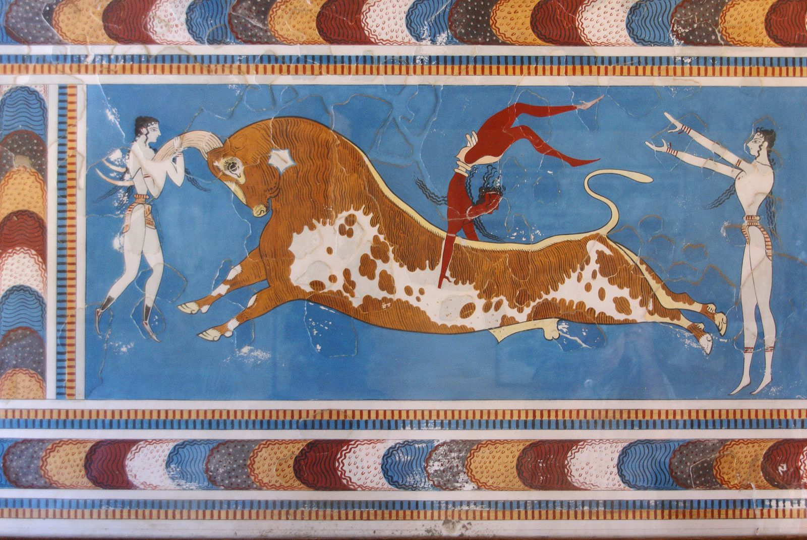

Avrupa Adı Nereden Geliyor? Bir Fenikeli Prenses, Bir Boğa ve Çözülmemiş Bir Soru
Bir tweet dolaşıyor: “Bütün kıtanın adı Semitik bir prensesten geliyor.” Avrupa’dan söz ediyor. Cümlenin içinde üç ayrı iddia var. Bir prenses var mı, o prenses Semitik mi, ve kıta gerçekten onun adını mı taşıyor? Üçüne de kaynak okuyarak baktım. Cevaplar “evet”, “bir bakıma” ve “antik yazarlar bile emin değildi” arasında dağılıyor.

Mit: Sur’dan Girit’e
Hikâyeyi önce olduğu gibi anlatayım. Europa, Fenike şehri Sur’un (Tyre) ya da Sayda’nın (Sidon) kralı Agenor’un kızı. Agenor’un en bilinen soyağacı, Aiskhylos’un Yalvaran Kadınlar’ına dayanıyor ve onu Poseidon ile Libya’nın oğlu yapıyor. Zeus genç prensesi görüyor. Beyaz bir boğa kılığına girip kıyıda otlayan sürünün arasına karışıyor. Europa boğanın sırtına biniyor, boğa denize atlıyor ve onu Girit’e taşıyor.
Girit’te Europa, Zeus’tan üç oğul doğuruyor: Minos, Rhadamanthys ve Sarpedon. Minos ile Rhadamanthys sonradan ölüler diyarının yargıçları arasına giriyor. Anlatılar kaçırılış konusunda ayrılıyor, bazı versiyonlarda Europa kandırılıyor, bazılarında zorla götürülüyor. Anne adı için de tek bir kayıt yok: Moschus Telephassa diyor, başka kaynaklar Argiope. İlyada’nın 14. kitabında ise babanın adı Agenor değil, Phoenix.
Kızını kaybeden Agenor, oğulları Kadmos ve Cilix’i aramaya gönderiyor ve bulamadan dönmemelerini söylüyor. Kadmos’un hikâyesini birazdan ele alacağım. Cilix Anadolu’ya yerleşiyor ve Kilikya adının kaynağı sayılıyor. Bu ayrıntılar Wikipedia’nın Agenor ve Kadmos maddelerinden. Soyağacında kaynaklar birbirini tutmuyor, o yüzden tek bir sürümü kesin gibi sunmuyorum.
“Fenikeli” demek ne anlama geliyor?
Mitin Fenike kökenli olduğuna dair antik ve modern ipuçları var. Lucian (M.S. 2. yüzyıl), Sayda’daki bir Astarte tapınağının bir rahip tarafından Europa’ya adanmış olarak tanıtıldığını aktarıyor. Claude Doumet-Serhal’ın yönettiği bir British Museum ekibi 2012’de Sayda’da, Europa’yı boğa üstünde gösteren sikkeler buldu. Wikipedia’ya göre M. L. West (1997), mitin Fenike tanrıları Aštar ile Aštart’ın boğa biçimindeki kutsal birleşmesinden doğmuş olabileceğini öne sürüyor. Bu bir hipotez, kesinleşmiş bir bilgi değil.
Peki Fenikeliler “Semitik” mi? Bu bölüm benim genel bilgim, bu yazının kaynaklarından değil: Fenike dili, Kenan dilleri arasında yer alan ve İbranice, Arapça gibi Semitik dil ailesine bağlanan bir dil. “Semitik prenses” ifadesi, mitteki Fenikeli kökenin kabaca bir özeti sayılabilir. Ama ifade bir dil ailesinden söz ediyor ve prensesin adının hangi dile ait olduğu başka bir soru.
Kadmos ve alfabe: aynı ailenin başka bir mirası
Europa’yı aramaya çıkan Kadmos’un hikâyesi, ilginç biçimde Avrupa’daki yazı tarihine uzanıyor. Herodot, Kadmos’un Fenike alfabesini Yunanlılara getirdiğini yazıyor. Wikipedia’nın aktardığına göre modern araştırmacıların neredeyse tamamı alfabenin Fenike kaynaklı olduğu konusunda Herodot’la hemfikir (Woodard, 2013). Ama kronoloji tutmuyor. Herodot Kadmos’un kendi çağından yaklaşık 1.600 yıl önce, kabaca M.Ö. 2000 civarında yaşadığını tahmin ediyordu. En eski Yunan yazıtları ise M.Ö. 9. yüzyıl sonu ya da 8. yüzyıldaki Fenike harf biçimleriyle eşleşiyor, Fenike alfabesi de yaklaşık M.Ö. 1050’de gelişmişti.
Bu çelişkiyi çözmek için farklı fikirler var. Ahl (1967) Kadmos’un bir Miken Yunanlısı ve getirdiği yazının Linear B olduğunu öne sürmüş. Boardman (1957) “Fenikeliler”in aslında Yakın Doğu’da yaşayıp dönen Yunanlılar olduğunu savunmuş. Schachter (2016) Kadmos’un Thebai kalesinin adından türetilmiş kurgusal bir kahraman olabileceğini söylüyor. Bunların hepsi alıntı. Hangisinin doğru olduğunu bu yazıyla çözemiyorum.
Kadmos’un kendi hikâyesi de mit ile tarihin iç içe geçtiği bir örnek. Wikipedia’nın aktardığına göre Kadmos, kız kardeşini bulamayınca ya da Zeus’a karşı gelemeyince Samothrake’ye gidiyor. Delphoi’de kahin ona özel bir ineği izlemesini ve ineğin yatacağı yerde bir kent kurmasını söylüyor. İnek onu Boiotia’ya götürüyor ve Kadmos orada Thebai’yi kuruyor. Su ejderhasını öldürüyor, Athena’nın talimatıyla dişlerini ekiyor ve silahlı Spartoi çıkıyor. Beşi hayatta kalıyor ve Kadmeia kalesinin inşasına yardım ediyor. İlginç olan şu: kardeşini ararken kurduğu kentin kurucu hikâyesinde de bir inek ve bir ejderha var. Bu paralellik benim gözlemim, kaynaklarda böyle bir yorum görmedim.
Bağlantı şu: Europa mitinin kardeşi olan Kadmos, Avrupa’nın en eski kültürel mirasının, yani yazının, Doğu Akdeniz’den geldiği anlatısıyla birleşmiş durumda. Mit ile gerçek tarihin burada ne kadar örtüştüğü tartışmalı.
Herodot: “Europa aslında Asyalıydı”
Bu hikâyeyi bugün kıtanın adının kaynağı gibi anlatmak kolay. Ama Herodot’un kendisi, M.Ö. 5. yüzyılda Tarihler’in 4. kitabında bu bağı sorguluyor. Verdiği tabloya göre bir Dünya var ve üç kadın adıyla anılıyor. Hiç kimse Avrupa’nın etrafının deniz olup olmadığını, doğuya ya da kuzeye ne kadar uzandığını bilmiyor. Libya’nın yerel bir kadından, Asya’nın Prometheus’un karısından geldiğini söyleyenler var, Lidyalılar ise Asya’nın Asias adlı bir erkekten geldiğini iddia ediyor.
Avrupa için de Sur’lu Europa’yı akla getiriyor, ama kendi itirazını ekliyor: Europa Asya halkındandı ve bugün Yunanlıların Avrupa dediği toprağa hiç gelmedi. Bu yüzden kıtanın adının onunla bir ilgisi olmayabilir ve kıtanın daha önce adsız olması da mümkün. Herodot sonunda yaygın anlatıya bağlı kalacağını söyleyip konuyu geçiyor. Bu özet Herodot’un metninin bir aktarımı.
Herodot’un “Tarihler”in 1. kitabında da (1.1-2) rasyonel bir versiyon var. O anlatıya göre Giritliler, daha önce Argoslu Io’nun kaçırılmasının intikamı olarak Europa’yı kaçırıyor. Wikipedia bunun iki yoruma açık olduğunu söylüyor: eski mitin rasyonelleştirilmesi olabilir, ya da bir Fenikeli soylunun kaçırılışının bozulmuş bir hatırası.
Adın yolculuğu: bir nimfeden bir kıtaya
Peki “Avrupa” kelimesi kıta anlamına ne zaman geldi? Kaynaklar burada da tek bir tarih vermiyor.
George R. Stewart’ın American Name Society’de yayımlanan makalesine göre en eski izler şöyle. Homeros’a atfedilen Pythia Apollon İlahisi’nde (M.Ö. 600’den önce) Avrupa, belki orta Yunanistan’ı, belki Yunan anakarasını anan bir halk listesinde geçiyor. Stewart bu kanıtın bir şeyi kesinleştirmeye yetmeyecek kadar belirsiz olduğunu söylüyor. Hesiodos’un Theogonia’sında (yaklaşık M.Ö. 750, 357. dize) Avrupa, Asya ve Doris’le birlikte bir nimfeler listesinde yer alıyor. Aiskhylos’un Persler’i (M.Ö. 472) Avrupa’nın kıta olarak en erken net anıldığı yerlerden biri.
Wikipedia’nın aktardığına göre M.Ö. 6. yüzyılda Anaximandros ve Hekataios, Europa’yı bilinen dünyanın bir parçası için kullanmaya başlıyor. Stewart Avrupa-Asya ayrımının İyonyalı coğrafyacılar sayesinde, özellikle Hekataios (yaklaşık M.Ö. 500) ve Pers Savaşları’yla sağlamlaştığını yazıyor, çünkü savaşlar bu ayrıma siyasi anlam kazandırdı. Strabon, Europa adını Balkan Dağları’nın güneyindeki bir Trakya parçası için kullanıyor.
Orta Çağ’a gelince, Wikipedia 8. yüzyılda dinî metinlerde “Europa”nın Charlemagne’ın ülkesi için kullanıldığını ve modern terimin kaynağının bu olduğunu aktarıyor. Jürgen Fischer’in (1957) çalışması ise bu adın, geç Roma İmparatorluğu’nun oriens-occidens (doğu-batı) ikiliğinin yerini nasıl aldığını izliyor. Latince bir metinde “europenses” kelimesinin bilinen ilk geçişi, 754 tarihli İspanya Vakayinâmesi’nde. Metin 732’deki Tours savaşından söz ediyor ve Saracenleri yenenleri bu adla anıyor. Wikipedia bu bilginin ikincil kaynaklara dayandığını ve orijinal Latince metne bakılması gerektiğini belirtiyor. Yazarı bilinmiyor ve eserin yazılış yeri tartışmalı.
Eski İngilizce’de ise Avrupa’nın bir yer adı olarak ilk görülmesi, yaklaşık 900 tarihli ve Orosius’un Historiarum adversum paganos eserinin bir çevirisi sayılan metinde. Wordorigins.org bunu çeviriden çok bir uyarlama ve genişletme olarak tanımlıyor.
Kıtanın sınırı nerede?
Bir adın kökenini tartışırken unutulan bir şey var: Yunanlılar için Avrupa uzun süre belirsiz sınırlı bir kavramdı. Stewart’a göre Herodot (4. kitap, 42-45) Avrupa’yı bir kıta olarak ele alıyor ama sınırı konusunda anlaşmazlık olduğunu belirtiyor. Kimi Don Nehri’ni, kimi Phasis Nehri’ni sınır sayıyordu. Herodot’un kendi sözüyle kimse Avrupa’nın doğuya ve kuzeye ne kadar uzandığını bilmiyordu.
World History Encyclopedia’ya göre Fenikeliler Avrupa’nın yalnızca kıyıdaki limanlarını tanıyordu ve Yunan yazarlar Avrupa’yı bir “karanlık kıta” olarak görüyordu. Ad, tanınan bir yerden çok bilinmeyen bir alanı anıyor olabilir. Bu yorum benim, kaynak yalnızca Fenikelilerin kıyıları bildiğini söylüyor.
Avrupa-Asya ayrımı Stewart’a göre İyonyalı coğrafyacılarla, özellikle Hekataios’la (yaklaşık M.Ö. 500) ve ardından Pers Savaşları’yla pekişti. Savaşlar iki kıta arasındaki çizgiye siyasi bir anlam yükledi. Ad, coğrafya bilgisi olgunlaşmadan önce bir çatışma çağında kimlik kazanmış olabilir. Bu da benim yorumum. Kaynak yalnızca ayrımın siyasi anlam kazandığını söylüyor.
Adın kendisi nereden geliyor?
İşin en tartışmalı kısmı burası. Kaynaklarda dört ana olasılık var.
- Yunanca kökeneurys (geniş) ile ops (göz, yüz) birleşimi, yani “geniş yüzlü” ya da “geniş bakışlı”. Wikipedia’ya göre M. L. West (2007), “geniş”in ilk Hint-Avrupa dinindeki yeryüzü sıfatı olduğunu belirtiyor. Stewart ise bu fikri fonetik açıdan zorlama buluyor ve vazgeçiyor. World History Encyclopedia bunu “geniş bakış” diye yorumluyor, denizden bakıldığında kıyının genişliğine atıf olarak.
- Semitik kökenAkadca erebu (batmak) ya da Fenikece ‘ereb (akşam, batı). Wikipedia’ya göre bu fikri 1966’da Ernest Klein ve Giovanni Semerano önermiş, M. A. Barry 1999’da bir Asur steli kullanımıyla desteklemiş. Aynı sayfa bunu “çoğunlukla olası değil ya da savunulamaz” buluyor. West (1997) fonetik uyumun “çok zayıf” olduğunu söylüyor. Stewart ise tam tersini savunuyor: Kadmos da bir Semitik köke bağlanabilir, Fenikelilerin Yunan anakarasını “batı” diye adlandırması mümkün. Wordorigins.org ise hem Yunanca hem Akadca açıklamayı olası bulmuyor.
- Yunan öncesi kökenBirçok Yunan mit adı büyük olasılıkla Yunanca öncesi bir dilden gelmiş olabilir. Stewart bunun mümkün ama kanıtsız olduğunu, çünkü elimizde yeterli kelime hazinesi olmadığını söylüyor.
- TesadüfStewart bunu olası bulmuyor ama kanıtlanamaz da buluyor.
Asya için de benzer bir tartışma var. Stewart, Asya’nın Hititçe Assuwa’dan geldiğini kabul ediyor, ama Yunanlıların onu Semitik “doğu” sözcüğüyle yeniden yorumlamış olabileceğini ekliyor. “Avrupa batı, Asya doğu” eşleşmesi çok güzel duruyor ama kanıtı zayıf.
Wordorigins.org’un bir tespiti de var: Mitin Miken dönemine (M.Ö. 1750-1050) ait olduğunu söylüyor, ama Wikipedia Europa’nın bilinen en eski güvenli resminin M.Ö. 7. yüzyılın ortasına ait olduğunu yazıyor. İkisini bağdaştıramadım. Biri mitin sözlü geçmişine, öteki yazılı ve görsel kanıta atıf yapıyor olabilir, ama bu benim tahminim.
Dilbilimciler bu tür kökenleri nasıl tartıyor?
Bu bölümde yazdıklarım benim genel bilgim, bu yazının kaynaklarından değil. Bir adın kökenini tartışırken dilbilimciler genellikle iki şeye bakıyor: sesler ve anlam. Önerilen kaynak sözcükle ad arasında düzenli ses eşleşmeleri kurulabiliyor mu, ve anlam o bağlamda makul mü? West’in Semitik öneriyi “fonetik eşleşme çok zayıf” diye reddetmesi ses itirazı. Stewart’ın Yunanca öneriyi “zorlama fonetik” diye reddetmesi de aynı türden. Yani iki taraf birbirinin ses argümanlarını eleştiriyor.
İkinci sorun, mit ile köken arasındaki sıra. Bir kıtanın adı varken, o adı açıklamak için bir mit türetilmiş olabilir. Böyle bir açıklama mitinin tarihini kıtanın adından daha eski göstermek zorunda değil. Kaynaklarımda bu olasılık açıkça işlenmiyor ama Stewart’ın “kıta kadından” ve “kadın kıtadan” varsayımlarını ayrı ayrı reddetmesi bu soruya dokunuyor.
Bu nedenle dürüst özet şu: ad tartışmalı ve yeni bir kanıt çıkmadıkça da tartışmalı kalacak. Hem Yunanca hem Semitik hem Yunan öncesi bir kökenin kapısı açık duruyor.
Europa’nın başka yüzleri
Europa yalnızca boğaya binen prenses değil. Wikipedia’nın aktardığına göre Girit’te Europa onuruna Hellotia adlı bir şenlik kutlanıyordu. Pausanias (M.S. 2. yüzyıl), Boiotia’daki Lebadeia’da Europa’nın Demeter’in sıfatlarından biri olduğunu yazıyor. Hesiodos’un Theogonia’sında Avrupa, nimfeler listesinde geçiyor. Aynı ad, mit anlatılarında bir prensesi, kült pratiğinde bir tanrıça sıfatını, şiirde bir nimfeyi ve coğrafyada bir bölgeyi işaret edebiliyor.
Bu bölümün yorumu benim: bu kadar farklı kullanım, adın tek bir “asıl” kaynaktan geldiğini varsaymayı zorlaştırıyor. Belki bir bölge adı sonradan bir kadınla ilişkilendirildi, belki tersi oldu. Elimizdeki kaynaklar bu ikisinden hangisinin geçerli olduğuna karar vermemize yetmiyor. Stewart da her iki yönü, yani “kıta kadından” ve “kadın kıtadan” varsayımını, destekleyecek kanıt bulamadığını söylüyor.
Gökyüzündeki Europa
Aynı isim bir de uzayda yaşıyor. NASA’nın anlatımına göre Galileo, Jüpiter’in uydularını 7 Ocak 1610’da gözlemledi. 15 Ocak’a kadar dört uydu bulduğuna karar verdi ve bulguları Mart 1610’da Sidereus Nuncius’ta yayımladı. Keşfeden olarak adlandırma hakkı onundu ve uydulara patronları Medici ailesinin onuruna “Medici Yıldızları” demeyi önerdi. 17. yüzyılın büyük bölümünde bu ad kullanıldı. Johannes Kepler 1614’te mitolojik adlar önerdi: Io, Europa, Ganymede ve Callisto. NASA’ya göre bu fikir iki yüz yıldan uzun süre tutunmadı.
Bugün Europa uydusu astrobiyolojinin en çok konuşulan adresi. NASA’nın sayfasına göre 1970’lerde Pioneer ve Voyager’ın yakın geçişleri, Europa’nın Güneş Sistemi’ndeki en düz yüzeye sahip cisim olduğunu gösterdi ve bu, genç bir kabuğa işaret ediyor. Buzlu kabuğun altında tuzlu bir okyanus bulunduğu varsayılıyor. Jüpiter’in çekimi, buzu eritip yeniden donduran bir ısınma yaratıyor. Hubble gözlemleri ve Galileo görüntülerinin yeniden analizi kabuğun altından püskürmeler olabileceğini düşündürüyor. NASA’nın Europa Clipper’ı Ekim 2024’te fırlatıldı ve 2030’da vardıktan sonra Europa’nın yanından 49 kez geçecek.
Güzel bir ters çevrilme: Fenikeli bir prensesin adı, Yunan mitolojisi üzerinden bir kıtaya, oradan da Jüpiter’in buzlu bir uydusuna kadar uzandı. Bu cümle benim bağlamım, kaynaklardan biri değil.
Neden bu hikâye bu kadar tutuyor?
Bu bölüm tamamen benim yorumum. Tweet’in popülerliğinin bir nedeni, “bütün bir kıtanın adı bir kadın adı” cümlesinin etkileyici ve kısa olması. Ama daha önemlisi, ismin kökeni gibi sorular gerçekten kesin cevaba oturmuyor ve bu belirsizlik, iki kutuplu tartışmalara yer açıyor. Kimine göre bu, Avrupa’nın kökenlerinin Doğu’ya dayandığının kanıtı. Kimine göre Yunan mitinden başka bir şey değil. Kaynaklar ikisini de tam desteklemiyor.
Yazıda gördüğümüz bütün tartışmanın ortak noktası şu: Avrupa adının bir Doğu Akdeniz bağlantısı olduğuna dair anlatı çok eski. Ama bu bağlantının tarihsel gerçeklik mi, sonradan kurulmuş bir hikâye mi olduğu bilinmiyor. Herodot bile M.Ö. 5. yüzyılda bu soruyu açık bırakmıştı. Soru hâlâ açık.
Tweet’e dönelim
Tweet’in cümlesi, tartışmayı tek bir iddiaya sıkıştırıyor ve belirsizliği siliyor. Bu üç iddianın ilki, yani mitteki prenses, doğru. İkincisi dilbilimsel bir ayrıntıya bağlı: Fenikeli bir prenses Semitik dil ailesine ait bir kültürden geliyor, ama “Europa” adının kendisinin Semitik olup olmadığı açık değil. Üçüncüsü en zayıf halka: kıtanın adının onun adından geldiğini söyleyen tek şey mitin kendisi, onu aktaran en eski tarihçi bile buna inanmıyor.
Bu yüzden tweet’in kısa hâli doğru değil, tamamen yanlış da değil. Mitin bir yorumu olarak okunabilir, tarihsel gerçek olarak okunamaz.
Bugünkü kalıntılar
Mit Avrupa’nın gündelik nesnelerinin içinde yaşıyor. Avrupa Komisyonu’nun sayfasına göre Yunan 2 avro madeni, Sparta’daki 3. yüzyıldan kalma bir mozaikten alınmış, Zeus’un boğa kılığında Europa’yı kaçırdığı sahneyi taşıyor. Avronun adının da Avrupa’dan geldiği açık. Bu son nokta benim çıkarımım, kaynaklardan biri değil. Bir avro madeninin üzerinde, bilinen en eski görseli M.Ö. 7. yüzyıla uzanan bir mit duruyor.
Bu yazının sınırları
Hesiodos’un tarihi, Apollon İlahisi’nin anlamı ve Aiskhylos’un kullanımı Stewart’ın makalesinden aktarıldı, ben orijinal metinlere bakmadım. Herodot’un metnini Lexundria sayfasındaki İngilizce çeviriden okudum ve bu özet gibi yazıldı, bire bir çeviri değil. Wikipedia sayfalarına ve World History Encyclopedia’ya dayandığım yerler var, bunlar birincil kaynak değil. Kadmos ve alfabe tartışmasındaki bilgiler de Wikipedia’nın özetinden. Bu alanda tek bir doğru yok, görüşler ayrışıyor.
Kaynaklar çelişiyor
- Yunanca kökenWikipedia, Yunanca türetmeye dair belirgin bir itiraz listelemiyor. Stewart ise fonetik olarak zorlama buluyor. İkisi aynı soruya zıt yönden bakıyor.
- Semitik kökenWikipedia ve Wordorigins bunu olası bulmuyor, West fonetik uyumun zayıf olduğunu söylüyor. Stewart ise bu görüşü savunuyor.
- Mitin yaşıWordorigins mitin Miken dönemine (M.Ö. 1750-1050) ait olduğunu yazıyor. Wikipedia ise Europa’nın bilinen en eski güvenli görselini M.Ö. 7. yüzyıl ortasına tarihliyor.
- Hesiodos’un tarihi ve içeriğiStewart Theogonia’yı yaklaşık M.Ö. 750 diye veriyor. Wikipedia ise Europa’yı anan bir Hesiodosçu fragmanı (Kadınlar Kataloğu) anıyor ve papirüs kopyasının M.S. 3. yüzyıla ait olduğunu belirtiyor. İki ayrı eser, ben bunları birbirine karıştırmamaya çalıştım.
- Europa’nın babasıİlyada Phoenix diyor, diğer kaynaklar Agenor.
- Apollon İlahisi’ndeki AvrupaOrta Yunanistan mı, anakara mı belli değil. Stewart kanıtı yetersiz buluyor.
Başlıca kaynaklar: Wikipedia, Europa (consort of Zeus); George R. Stewart, “The Name Europe”, American Name Society; Herodot, Tarihler 4.45 (İngilizce çeviri); World History Encyclopedia, Europe; Wordorigins.org, Europe; Wikipedia, Agenor; Wikipedia, Cadmus; Wikipedia, Chronicle of 754; Avrupa Komisyonu, Yunan avro madenleri; NASA, Galileo ve Jüpiter’in uyduları. Fotoğraf: Gu Bra / Pexels (Pexels lisansı).
Veri notu: Yazıdaki antik metin aktarımları ve akademik görüşler yukarıdaki ikincil kaynaklardan (Wikipedia, Stewart’ın makalesi, World History Encyclopedia) alınmıştır, birincil metinlere ya da ilgili makalelerin tamamına bakmadım. Fenike dilinin Semitik olduğu bilgisi, dilbilimcilerin ad tartışmasını nasıl tarttığı ve “Fenikeli” kökenin yorumlanması benim genel bilgim ve yorumumdur. Kadmos’un hikâyesindeki paralellik, “neden bu hikâye tutuyor” bölümü ve Avrupa’nın sınır algısına dair yorumlar benimdir. Hesiodos’un tarihi Stewart’tan alınmıştır. Zaman çizelgesindeki aralıklar orantılı değildir. Bu yazı bilgi amaçlıdır.